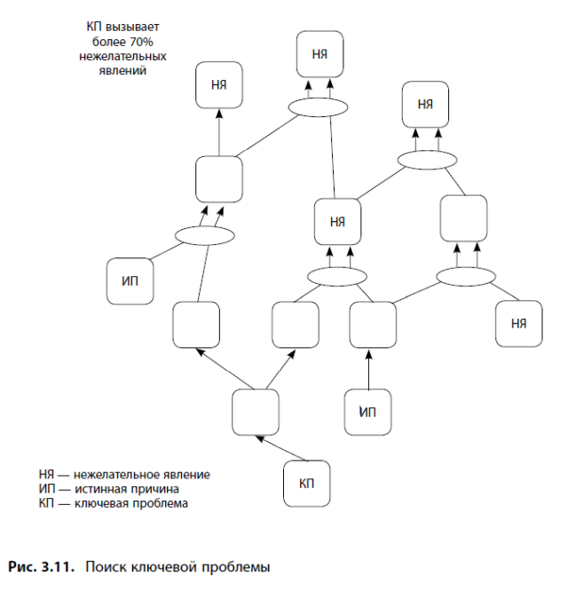
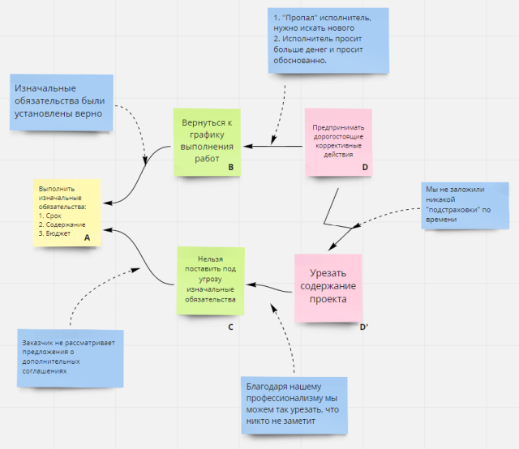
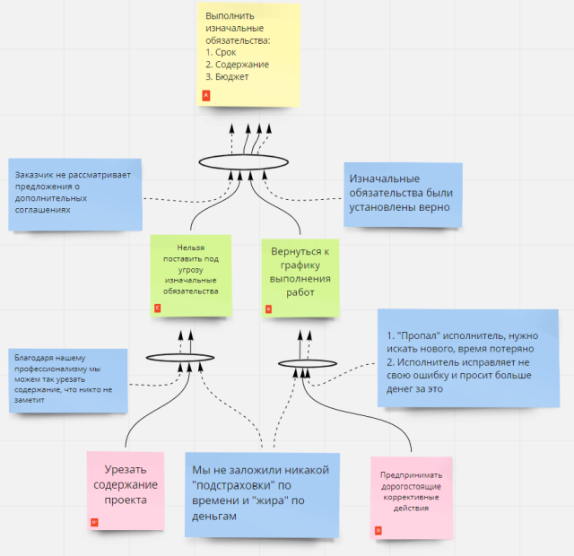

Theory of constraints (TOC)
Table of Contents
Что такое TOC
- Для кого нужна?
ТОС посвещена управлению. Руководители и управленцы нуждаются в новом взгляде. Взгляде, который свойственен организатору, который преобразует организацию и знает с какой целью он это делает.
- Что есть цель?
Цель рассматривается как план развития организации, который может включать в себя множество результатов и необходимых условий для их осуществления, Голдратт не разделяет эти понятния.
- Ключевое понятие - ограничение системы
Понятие, необходимое для того, чтобы иметь возможность преобразовать систему или организацию. Необходимо иметь знания и представления о каждой части системы, чтобы найти то самое ограничение.
- Образ организации как цепи
Цепь рвётся лишь в одном звене, когда к ней прикладывают критическое усилие. Призван иллюстрировать что в каждый момент времени существует лишь одного ограничение системы.
- Связь с процессами улучшения качества
ТОС схожа с TQM если рассматривать их цели. Только реализуя TQM можно нагрузить всех работников задачей совершенствования системы - что есть не лучший вариант для рукводителя.
- Для чего нужен инструментарий ТОС
TOC - это план преобразований и сочетается с TQM в том, что указывает где изменения нужны в первую очередь, для того чтобы сократить длительное время ожидания тех же результатов.
- Образ организации как цепи
- Принципы ТОС
- ТОС - предписывающая теория
Она не описывает законы природы, а даёт методы для человеческой деятельности. Законы имеют только объекты природы, такие объекты как системы или организации могут иметь законы. Но они обусловлены целью.
- Ключевая проблема
Почти всё, что нам не нравится в системе это лишь сигналы. Особенно если проблема проявляется снова и снова. Идея заключается в том, чтобы найти причину этой проблемы и выявить ограничения системы, а их не может быть много, исходя из представления что система похожа на цепь.
- Идеи - не есть решения
Решения по подчинению всех остальных звеньев цепи найденному ограничению должны воплощаться в жизнь.
- ТОС - предписывающая теория
- Пять направляющих шагов ТОС
- Параметры для оценки эффективности решений
Критерии для проверки логических построений
- Cвой язык и условия его применения
Для обоснования устройства диаграмм и деревьев есть ряд правил, которые являются проекцией мат.логики. Этот язык предлагается использовать в команде единомышленников, которые могут открыто обсуждать конструктивные предложения и идеи, воспринимают критику.
- Критерии
- Из чего состоят схемы
Схемы состоят из блоков и стрелок. В блоках есть законченные утверждения, которые выражаются грамматически правильным предложением, в котором должны присутствовать субъект, действие, объект. Чтобы утверждение содержало одну мысль, необходимо исключать скрытые причинно-следственные отношения. Стрелки идут от причин к следствиям.
- Содержание
Должно соответсвовать опыту аудитории. Если слушающие могут с ним согласиться, то это так.
- Правила мат.логики
Следствие может быть вызвано либо взаимозависимыми либо независимыми причинами. Они могут быть составными.
- Достаточность
Логическое И. Чтобы связь существовала необходимо наличие двух взаимосвязанных причин. Обозначается стрелками проходящими через эллипс. Необходимо отображать только те причины, без которых наступление события было бы малозаметным или его не было бы вовсе.
- Необходимость (Альтернативная причина)
Логическое ИЛИ. Явление может быть вызвано одной из нескольких независимых причин. Если результат, вызванный предпологаемой альтернативной причиной значительно меньше резульата, выхываемого исходной, альтернативная может быть исключена.
- Достаточность
- Из чего состоят схемы
- Типичные ошибки и проверки
- Подмена причины следствием
Пример "Хороший клев": это когда на берегу много рыбаков и их ведра полны или вчера река кишела рыбой и сегодня открылся сезон? Подсказка: Посмотрите, является ли указанная причина скорее сигналом проявления, а не его источником или может ли его формулировка быть сокращенным вариантом более точного?
- Проверочное следствие или косвенный признак
В реальной жизни большинство причин влечет за собой несколько следтвий. Значит эти следтсвия можно использовать для доказательства истинности преложенных причин или подтверждения неявной причины.
- Тавтология
Следствие предполагается в качетсве обоснования причины. Не приведено косвенных признаков, подтверждающих причину.
- Подмена причины следствием
Инструменты ТОС
- Дерево текущей реальности
- Определение, цель
ДТР необходимо для выявления истинной причины проблем. ДТР - это дерево из видимых проявлений состояний системы (листьев) и лежащими в их основе причинами (корнем) и установленными между ними причинно-следственными связями.
ДТР составляется для системы. Предполагается, что её элементы взаимосвязаны, т.е. изменения в одной части системы ведут к изменениям в других её частях. Части системы могут быть как нежелательными так и желательными явлениями.
- Описание
Суть работы над ДТР - поиск ограничения системы. Симптомы называются нежелательными явлениями, а факторы их вызывающие истинными причинами. Мы почти всегда сталкиваемся с переплетением множества факторов.
Нежелательное явление характеризуется тем, что отрицательно сказывается на всей системе. Построение ДТР начиная с НЯ, так как это ускоряет анализ, позволяя быстрее найти ограничение системы. Истинная причина - это начало причин и следствий. Это может быть последнее звено цепи, находящейся в сфере вашего влияния.
Ключевая причина это истинная причина решение которой даст больше плодов. Она скорее всего окажется в корне получившегося ДТП. Если КП лежит вне сферы нашего влияния, следует признать что проблема отсутствует.

- Инструкция по созданию ДТР
- Анализ ДТР
Проверяющий не обязан разбираться в КПЛП, хотя это бы не помешало. Главное, чтобы этот человек обладал хотя бы интуитивным знанием в рассматриваемой области. Если вы сами владее КПЛП, то сможете корректно переформулировать вопросы и замечания проверяющего.
- Определение, цель
- Диаграмма разрешения конфликтов "Грозовая туча"
- Определение, цель
ДРК является механизмом генерации идей и нужна, чтобы удостовериться, что конфликт есть, дать подробное объяснение причинам существования проблемы и описать все ошибочные посылки. Успешное разрешение конфликта заключается в отказе от ошибочных посылок, а не нахождении компромисса.
- Описание
ДРК это часть большой схемы, которая описывает "кусочек" существующей действительности. В текущем состоянии методы обеспечения ставят под угрозу выполнения двух необходимых условий. Прорыв это какое-либо действие или видение желаемой ситуации - нечто пока не существующее, но жизненно важное для развития системы, решение которое позволит выполнить все необходимые условия. В ТОС нет цели построить на 100% достоверное ДРК, т.к. оно будет неразрешимо. ДРК это элемент построений, который необходим для выражения существующего конфликта и последующего обсуждения с командой.

- Инструкция по созданию ДРК
- Обозначьте конфликт методов обеспечения
Под методами обеспечения предполагаются какая-либо деятельность, которая происходит регулярно. При этом данная деятельность имеет связь с нежелаетльными явлениями, либо сама представляет из себя НЖЯ. На схеме два конфликтующих прямоугольника обозначаются буквами D, D'.
- Определите необходимые условия
Их содержание должно определяться ответом на вопрос: "А что мы хотим обеспечить этим методом?". На схеме ДРК НУ обозначаются B и C.
- Сформулируйте задачу
После того, как мы сформулировали НУ необходимо найти "ближайшую" цель, которую обеспечивают два описанных условия. Цель подписывается на схеме ДРК буквой А.
- Проверьте логические связи
Связи ДРК проверяются с помощью КПЛП. При этом можно использовать следующие словесные формулы: для того, чтобы решить А мы должны обеспечить B (так же к С). Для того, чтобы обеспечить B, мы должны D. Кроме того, нужно удостовериться, что методы обеспечения ставят под угрозу НУ, тоесть из схемы должно быть понятно почему D ставит под угрозу C, и D' ставит под угрозу B. На этом этапе необходимо ограничиться принципом необходимости. Нам нужно прежде всего обеспечить наглядность ДРК для начала обсуждения конфликта.
- Перечислите исходные посылки
После того, как дерево представлено аудитории. Можно начинать коллективно брейнштормить исходные посылки к дереву по принципу достаточности. Мы спрашиваем, а достаточно ли для этой связи такой причины? И добавляем исходную посылку, подразумевая что для возникновения следствия нам будет необходима и истинность исходной посылки и истинность данной причины (это может быть сделано любой связи тучи).

- Оцените исходные посылки
Таким образом, если мы найдём ложную исходную посылку, это будет означать, что она будет возможным вариантом прорыва. Это возможно потому, что для обеспечения логики связи нам нужна истинность данной посылки. Если этого нет - связь рвётся, туча разрешается (или рассеивается).
- Предложите варианты прорыва
Если мы разрушили одну из связей в туче, это не значит, что это даст какие-то плоды. Например, в классической туче Голдратта связь между "Обеспечить условия контракта" и "Вернуться к графику выполнения работ" рвётся ложностью посылки "Исходные условия контракта были верные", но нам это ничего не даст.
- Выберите оптимальное решение
Оптимальное решение, это тот из вариантов прорыва, который даст нам больше плодов.
- Обозначьте конфликт методов обеспечения
- Анализ ДРК
ДРК должна достаточно точно описывать существующую ситуацию. Одновременно с этим не нужно подкреплять существующий конфликт "сухими" наблюдениями. В ДРК утверждение должно восприниматься аудиторией как обязательное требование. Ключевое слово тут - "восприниматься". Нет цели создать неразрешимую ДРК. Секрет успешного ДРК кроется в возможности раскрыть и оспорить исходные посылки. Чтобы проверить действительно ли мы нашли прорыв необходимо ДБР.
- Определение, цель
- Дерево будущей реальности
- Определение, цель
ДБР позволяет удостовериться, ведёт ли выбранная идея к желаемым результатам. Цель - вести стратегическое планирование.
- Описание
Возможно ли моделирование в управлении? ТОС предлагает для этого ДБР. Развивая основную идею преобразований, ДБР позволяет учесть существующие в системе важные моменты. ДБР строится снизу вверх, от возможных вариантов прорыва. При этом необходимо состредоточиться на полной проработке связей по принципу достаточности. Таким образом, мы сможем учесть наибольшее количество возожных негативных эффектов.
- Определение, цель
- Дерево перехода
Револьеврный проект. Сетевые графики. Важен только следующий шаг и отсутствие длинных стрелок между шагами. Предсказать мы ничего не можем, но мы можем опереться на нашу логику.
- План преобразований